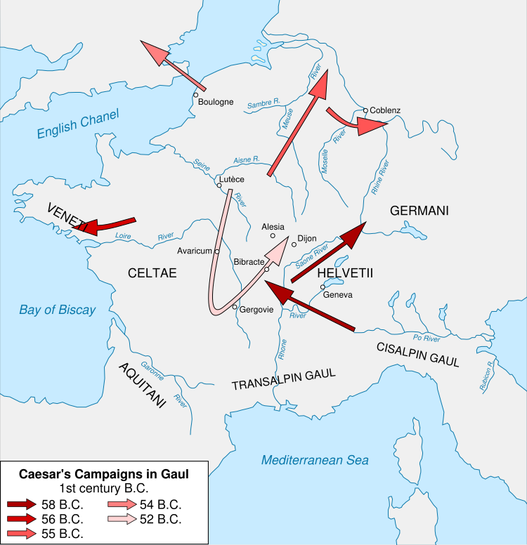

The Blog
Deep dives into the life, campaigns, and enduring legacy of Julius Caesar — history told with purpose.

Why Caesar's Gallic Wars Changed Europe Forever
How eight years of relentless campaigning reshaped the entire continent and laid the cultural, linguistic, and political foundation for modern European civilisation.
Read Full Article →
All Chronicles
Every Article
Why Caesar's Gallic Wars Changed Europe Forever
How eight years of relentless campaigning reshaped the entire continent.
Read Article →
Leadership Lessons from Julius Caesar
The timeless principles that made Caesar the greatest commander in history.
Read Article →
The Ides of March: What Really Happened?
March 15, 44 BC — unravelling the conspiracy, the betrayal, and the aftermath.
Read Article →